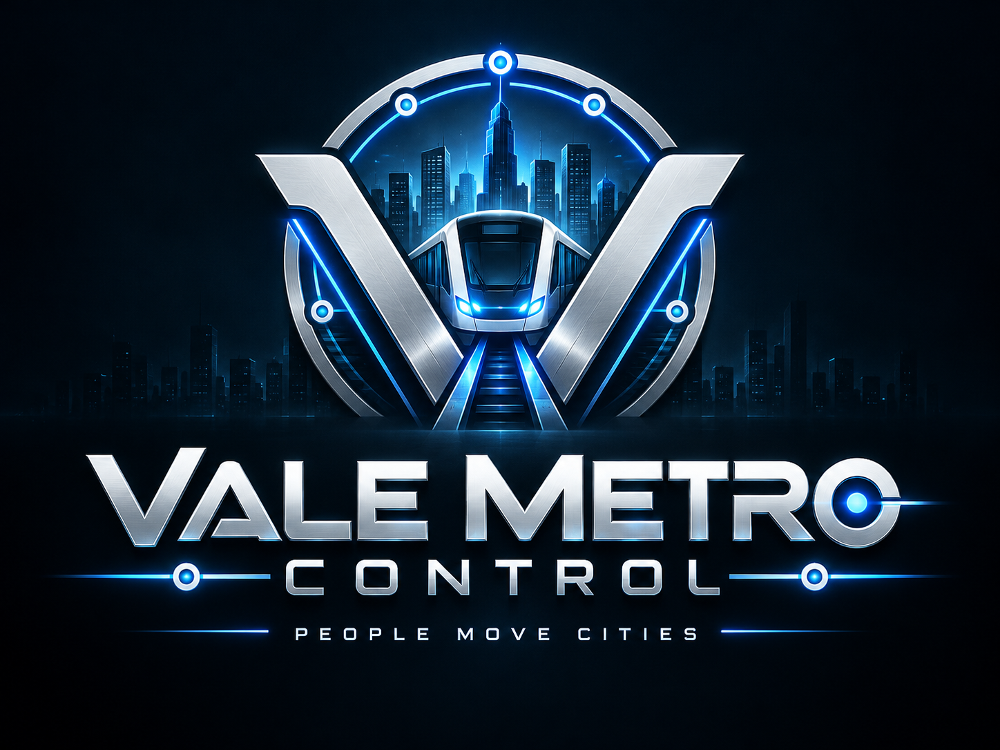

CENTRAL METROPOLITANA · RELEASE 1.0
A cidade está em movimento.
Coordene a Linha Vale, responda a uma demanda crescente em Riverside e mantenha o serviço seguro.
Um turno salvo foi encontrado. Você pode retomá-lo ou iniciar uma nova sessão.
MODO CARREIRA
Escolha a cidade que vai mover.
Cada rede tem caixa, demanda, capacidade e desafios próprios. Seu desempenho permanece salvo entre os turnos.
CENTRAL OPERACIONAL
Vale Central- Horário
- 06:00
- Pontualidade
- --
- Fila crítica
- --
- Saldo
- --
- Carreira
- --
- Frota
- --
MAPA AO VIVO
Corredor Vale Norte - Porto Azul
Trem
Estação
Expressa
Risco
Clique em um trem ou estação para abrir o painel de contexto.
SITUAÇÃO DA REDE
Painel de despacho
Leitura operacional por corredor, frota e canal de coordenação.
PREFERÊNCIAS LOCAIS
Acessibilidade
As preferências ficam salvas neste navegador e funcionam também no modo offline.
RELATÓRIO DE TURNO